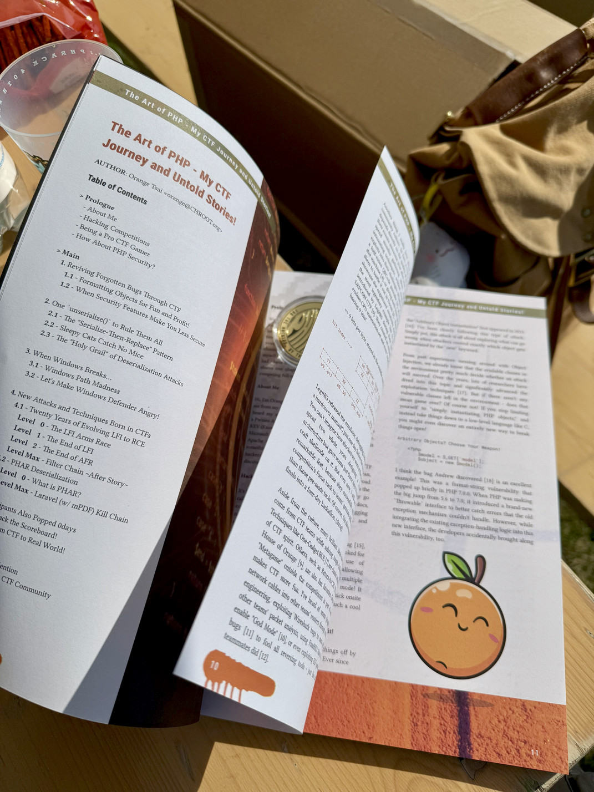
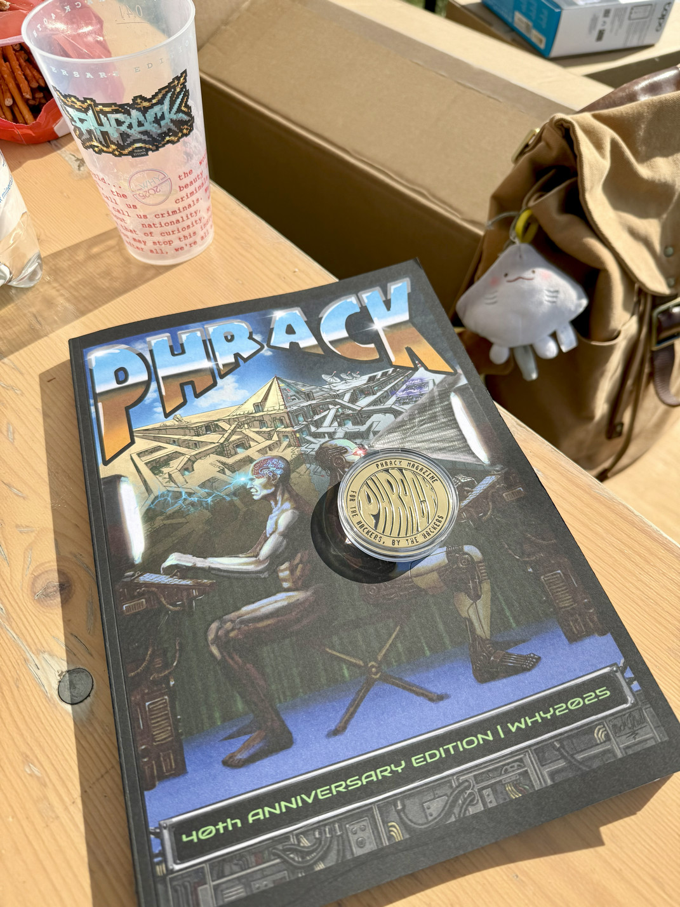

序
這是一篇為了《PHRACK》所撰寫的文章！雖然來不及趕上它最輝煌的年代，但也深知其對 “駭客文化“ 不可抹滅的重要性 —— 從計算機第一個揭開 Stack Buffer Overflow 神秘面紗的啟蒙經典，到現今所有 SQL Injection 攻擊的奠基之作，再到 Nmap 第一份原始碼的發布，以及出現在無數影視作品、控訴著「若我有罪，也是好奇心讓我犯罪」的《駭客宣言》…… 時至今日，四十年過去了，不知多少經典由此而生、藉其傳遞著知識，並啟發了一代又一代的駭客！
這篇文從發想到完稿共經歷了半年，事後回顧才發現好像有點用力過猛、花了太多時間。寫作真的是件挺困難的事，但我還滿喜歡在一天腦力激盪後，邊在咖啡廳旁的巷弄散步、邊思考還有什麼更值得留下，並加以提煉；也像是場跟自己的對話。尤其在 AI 的浪潮下，能不借助 LLM、從頭打磨出屬於自己的一篇萬字長文，某種程度也是我對這份文章的另一個驕傲！ <(￣︶￣)>
> 註：不過翻譯有用 LLM 調整啦，可能有人因此覺得英文版讀起來比較順XD
希望這篇文章能帶給你一些收穫，無論是技術上的啟發、或回憶所帶來的共鳴，也希望努力的人都能確實地被看見 ：）
── 僅此紀念 PHRACK 四十周年、我的 CTF 隊友們，還有那段「電競生涯」！
 |
 |
目錄
- 前言
- 正文
- 結語
前言
我們一生中都在扮演著不同角色，我很慶幸很早便找到自己的興趣、並能以此為生。在成為一位全職駭客前，我也曾是別人眼中胡作非為的腳本小子、尋求更大刺激的年輕人，甚至為了高額獎金到處奔走的漏洞獵人；到如今能自豪地稱自己是個 “駭客”。過去的經歷無論好壞，都塑造了今天的我，而這篇文章想分享的，正是其中一段 —— 我全職參加駭客比賽的日子！
我是誰？
嗨，我是 Orange Tsai 🍊！相信不少人是透過我的漏洞研究認識我的，你可能也曾在各種 Pwn2Own 冠軍、Pwnies Awards 得主名單上聽過我的名字；甚至從 CISA 的 KEV 列表（Known Exploited Vulnerabilities）上認識到我的漏洞，像是 Microsoft Exchange Server、SSL VPN，或最近的 Apache HTTP Server。雖然不知是否該為此感到驕傲，但在 2021 駭客最愛用的漏洞排行榜前十五名中，有六成是由我發現並回報的。 ¯\_(ツ)_/¯
駭客競賽
從第一次接觸所謂的「駭客競賽」到今天，也差不多 18 年了。早期的駭客競賽（或者說 Wargame）還不像如今的 CTF 那麼充滿競爭，反而更強調知識的傳承，以及所謂的 “好玩“。因此各種冷門知識，無論電腦科學、物理數學、資安技術、甚至駭客文化，只要是對一個技術宅來說有趣的事，全都能變成一道關卡、出現在挑戰中！
因此即使過去那麼多年，我仍清楚地記得那段無憂無慮、能單純探索新事物的日子 —— 每天期待能從新的題目中學到什麼，無論它是否有用；為了一個簡單的問題去深入一門學問，享受解開題目的成就感；對自己的每個小進步雀躍、重複這個過程，並樂此不疲。
還記得那段日子就像沉迷線上遊戲般，沒日沒夜地在排行榜上刷積分；也還記得那時的我，為了解出上面的題目、什麼都肯做 —— 包括但不限於，厚著臉皮把題目印出來拿去問數學老師。你知道，這對一個非傳統意義上的好學生來說，並不是件容易的事。總之，我嘗試過所有我能想得到的方法、卻仍舊毫無頭緒，我的排名也因此停滯了好長一段時間…… 也是直到某天，我發現題目所要求的解答精確度似乎沒那麼高，這代表我能大膽地忽略一道數學多項式中最複雜的部份，並最終求出正解！🎉
記憶中，這是我第一次感受到取巧所帶來的快樂；也是第一次發現到「只要稍微多注意一點細節」，連我也能解決專業人士眼中不可能的難題。這種跳出框框、用聰明的方法解決問題的經驗，對我日後影響巨大。
所謂的「電競選手」
我花費了很大一部分的人生，在這些所謂的「CTF 遊戲」上。對於那些還不太熟悉 CTF 的人，這裡提供一個簡單的解釋：
CTF（Capture the Flag）是駭客間為了好玩所互相發起的一種活動，參賽者必須在指定時間內使用不同的駭客技巧解開出題者精心設計的題目，才能取得一個所謂的 “FLAG” 🚩。
而隨著 DEFCON 在 1996 年正式將其引入，CTF 如今也成為一項知名的競技運動 —— 參賽者必須在 48 ～ 56 小時內，使出渾身解數突破出題者所設下的關卡。而隨著發展至今， CTF 更是在各大駭客會議、學校中發展出各自的系列賽，SECCON、XCTF 等全國性的巡迴賽，甚至全球規模的 ICC 聯賽等。世界各地的愛好者更將 DEFCON 視為「CTF 界的聖杯」，夢想著一生至少一次、親自到 Las Vegas 參賽。
我很慶幸自己恰好經歷過 CTF 最輝煌的那個年代！回顧自己的「電競生涯」，我前後共參加超過兩百場比賽；尤其在最投入的那四到五年，幾乎每兩個月就要飛到不同的國家參加決賽、期間還必須持續投入在那些高強度的 CTF 資格賽。雖然從幾年前開始慢慢淡出這個圈子，但我卻始終很懷念那些 —— 無論是跟著隊友們窩在教室熬夜通宵；或趁著比賽之餘，一起探索陌生的城市、講講垃圾話。那些跟他們一同 Hacking 的日常，都是我很珍貴的回憶！
除此之外，另一個讓我對 CTF 印象深刻的應該是其獨特的社群文化，尤其當一場主辦的聲譽又直接取決於它們的題目。為了使 CTF 比賽一年比一年精彩，主辦團隊往往會囤積一整年的點子，把他們認為最有趣的技術、最天馬行空的創意，甚至最引以為傲的利用技巧放進題目中 —— 無論是還原被吃到一半的 QRCode 鬆餅、實體入侵吃角子老虎機，或發給每個隊伍一台 Xbox 只為了讓他們 “好好玩遊戲“，這些都充分展現出了主辦方的創意。而其中我認為最經典的，莫過於 LegitBS 在他們擔任 DEFCON CTF 主辦最後一年時所推出的 cLEMENCy —— 一套全新、基於 Middle-Endian 的 CPU 指令集；在新的架構下一個 Byte 甚至還不是 8-Bit 對齊，而是九個 ¯\_(ツ)_/¯
👇 9 bits per byte, stored in the middle-endian format!
1 | +-----Register (bit0 = MSB)-----+ |
LegitBS 直到比賽前一天才發布除錯工具、模擬器，還有一本厚厚的精裝手冊。你永遠無法想像我們當下有多震驚；他們花了整整兩年設計一套全新的架構，卻要求隊伍們在短短三天內掌握、並在上面寫 Shellcode。但即便到今天，我仍認為這是項壯舉 —— 因為他們成功將比賽的重心，重新拉回到隊伍間「真正的技能」，而非那些事先準備好的工具。只是，這也讓整場決賽硬生生變成一場長達四天的黑客松。
而除了社群文化外，隊伍在解題過程中也誕生出不少令人拍案叫絕的創意，例如 One-Gadget RCE 本身就是一項充滿 CTF 風格的技巧，其它如 Return-to-CSU 或是 House of Orange 也是玩家間津津樂道的技術。此外，就連遊戲外的遊戲（Metagame）也是讓整個 CTF 變得更加有趣的一部分 —— 像我就聽過有隊伍用社交工程偷接上對手的網路線、或用 Wireshark 漏洞在別人分析流量時跳個小算盤，甚至用 FreeBSD 0day 開啟上帝視角；就連我的隊友也曾利用 ELF 解析器中的缺陷去騙過所有逆向工具。這些都是透過攻防才得以孕育出的創意！
我很喜歡這種一群人不計較利益、純粹 “Hack for Fun“ 的氛圍！所以儘管 CTF 本質上只是一種比賽，但它某種程度也代表了駭客世界的一個縮影。而這些由參賽者還有主辦團隊所碰撞出的火花，我認為不該隨著時間的流逝而被遺忘，因此趁著這次機會也想把那些故事記錄下來！
那 PHP Security 呢？
“我很喜歡 PHP！“ —— 尤其在早期那個、只要稍微懂點皮毛就能在虛擬世界遨遊的年代，它的不完美反倒讓它美麗無比。儘管我也知道，早期在玩這些所謂的「網站入侵」總會被當成腳本小子、貼上技術力不足的標籤，但這絲毫不妨礙我想寫些跟它有關的內容，尤其是從它的底層結構還有語言實作出發。
我約莫從 2010 年開始深入 PHP Security，記得在當時，由 Stefan Esser 所發起的《The Month of PHP Security》對我來說是宛如聖經般的存在（沒有之一）；此外由 80vul 出版的《PHP Codz Hacking》也是每當有更新我總是反覆閱讀。雖然那時尚無法瞭解它們背後的精妙之處，但這都是某種養分、豐富了年輕時的那個我！
而隨著 CTF 在 2010 年代中期開始蓬勃發展，CTF 社群也逐漸成為 PHP Security 背後的重要推手。無論是主辦方為了挑戰全世界高手所精心設計的題目，或是參賽者超出作者想像的非預期解，這些都確確實實地在慢慢堆高整個 PHP Security 的邊界，所以即使 CTF 只是某種縮影，它有時也會反過來影響真實世界！
而這幾年更歸功於 CTF，讓我有幸見證、並參與了幾個全新攻擊的誕生，為此也重訪了 PHP 原始碼不下數十次。也許總會有人比我更適合這個主題，但就請讓我先藉著《PHRACK 四十周年》這個難得的機會，完成一個自己長久以來的夢想吧！
正文
接下來，我想嘗試捕捉 CTF 與 PHP 所碰撞出的火花，無論是那些啟發了一代又一代出題者的經典，又或是 CTF 社群是如何用其獨特的方式，去推動整個資安技術的發展，我想試著記錄下那些傳奇！
當然，沒人能知道所有故事，所以如果有任何遺漏、或引用到不正確的來源也請見諒，也歡迎讓我聽到更多故事。畢竟，只有當我們討論越多，那些經典才更容易被沉澱下來、並傳誦出去：）
1. Reviving Forgotten Bugs Through CTF
我們總渴望走在知識的最前線，卻始終不可能掌握所有細節；正因如此，CTF 才能成為一個絕佳的管道，幫助我們重訪那些不小心忽略的程式缺陷。
而為了要創造出有趣的題目，許多 CTF 作者也會化身成「漏洞考古學家 🔍」；畢竟要能分辨出何謂有趣，本身就相當考驗對知識的掌握、以及是否熟悉該領域的最新發展。因此 CTF 作者往往會閱讀各種艱澀的技術文件，嘗試從年久失修的論壇或官方錯誤管理平台中尋寶，找出那些看似無害的小缺陷、加上自己的巧思，並賦予它們全新的價值！
以我自己為例，像是 Corrupting Upload File Indices 就是一個被我忽略很久的漏洞。它巧妙濫用了 PHP 在使用 snprintf() 串接索引名時的不一致，讓你能用「單檔上傳」的方式去偽造出原本只有多檔上傳才會得到的資料結構。我也是一直到多年後的某場 CTF 實體賽，才發現自己居然錯過了一個這麼酷的玩意兒。
—— 而作為這篇萬字大作的第一章，也許我該拋磚引玉，從分享個自己的收藏開始！
1.1 - Formatting Objects for Fun and Profit!
自從 Arbitrary Object Instantiation 在 2015 年問世後，我就一直密切關注著這類攻擊的發展。簡單來說，這類攻擊在探討「當攻擊者有能力控制 new 實例化的物件後，可以造成哪些風險？」
👇 Arbitrary Objects? Choose Your Weapon!
1 |
|
從過往利用 Object Injection 的經驗我們已知「當前環境存在哪些類別」直接決定了一次攻擊是否成功，這點在過去也有不少前輩深入研究，並大幅推進相關的技術。只是，如果今天環境內已經找不到任何可利用的類別，那是否就毫無希望呢？—— 當然不！如果不要把視野侷限在「只能實例化 PHP 物件」，而是從更底層的 C 語言出發，也許你會發現一條截然不同的利用方式！
我想 Andrew Kramer 發現的漏洞就是個很棒的例子，這是一個只短暫存在於 PHP 7.0.0 的格式化字串漏洞；在版本要從 5.6 全面升級到 7.0 時，PHP 為了更好地去捕捉過往例外機制無法處理的錯誤，決定引入了一個全新的 Throwable 介面。然而，當開發者在把這個新機制整合進既有的程式邏輯時，也不小心將這個漏洞給帶了出來。
當我第一次看到 Andrew 的報告時，馬上意識到它能與 Arbitrary Object Instantiation 完美結合，成為一個我願稱為「格式化字串導向」的有趣組合（Format-String Oriented Programming）。
1 | +--------------------------+ +--------------------------+ |
—— 這原本只是一個躺在我筆記中的酷玩意，只是沒想到一放就十年了。而與其繼續讓它在那生灰塵，不如趁著這個機會記錄下來，畢竟應該也沒多少人會想到，居然能在腳本語言中重溫一次經典的格式化字串攻擊，真不愧是 PHP！👍
👇 One two three - pop that FSB!
1 | => [1] leak address through PHP errors |
1.2 - When Security Features Make You Less Secure
而自從 Alexander Klink 和 Julian Wälde 在柏林駭客大會，使用雜湊表缺陷攻破（幾乎）所有程式語言、一舉震驚所有人後，PHP 不得不引入 max_input_vars 來做為其應對措施。儘管這個做法並沒有從根本去解決問題，但至少避免了 PHP 本身因大量輸入所導致的資源耗盡。只是「拿限制來做防禦」本身就是一把雙面刃，例如 PCRE 的回溯上限原用來防止 ReDoS 攻擊，卻反而被攻擊者拿來使正規表達式失效。在這裡我也想介紹另一個，所謂的 “安全機制“ 反倒讓你更不安全的例子！
在 PHP 設定 HTTP Header 中，其實存在著一個隱藏的陷阱：只要在設定 Response Header 前緩衝區已經存在了任何形式的輸出，那 PHP 就會忽略後續所有的 HTTP Header 設定，這點在官方的文件中也被明確提及：
Remember that header() must be called before any actual output is sent, either by normal HTML tags, blank lines in a file, or from PHP.
雖然這個技巧對大多數的 CTFer 來說已經是個老梗，只是絕大部分的題目都還是在利用既有的程式邏輯，對緩衝區寫入內容、並造成額外輸出。但如果今天在 header() 前已經沒有任何程式碼，那我們還能利用這個行為嗎？
👇 CSP: Content Security Policy
1 |
|
當然！Philippe Dourassov 很巧妙利用 max_input_vars 上的一個副作用：當請求的參數超過數量上限時，PHP 會好心向你吐出一段警告；然而這段警告也恰巧違背了「Response Header 前不能有任何輸出」的這個假設，導致原本保護網站的 CSP 完全失效，並使 XSS 再次出現！
👇 CSP? Can’t Stop Payloads!
1 | => [1] CSP says No! |
不得不說，我還滿喜歡這種「原本設計來保護你的安全機制，反倒讓你更不安全」的故事。而至於 PHP 在修復演算法複雜度時，不小心將原本的 DoS 全面升級成 RCE —— 這又是另一段有趣的故事！
2. One unserialize() to Rule Them All
整個駭客圈其實很早就知道：「當攻擊者控制 unserialize() 輸入後，便能提前塞好物件、發動魔法函數，並達成各種攻擊」。然而，隨著大眾逐漸認識到反序列化的危害，開發者不再盲目地相信使用者輸入，使得駭客不得不開始深入應用程式底層、轉去探索更核心的機制，像是 WordPress 能夠忽略其資料型態，隨意將字串、陣列存到資料庫的特性，就是個值得深入研究的機制！
—— 在 WordPress 中，只要任何從資料庫取出的內容「看起來像序列化」，WordPress 便會試圖將其還原成物件；因此透過這個 “方便“🫰，無論是利用不對稱的序列化介面，或用一個大便 💩 符號去重現經典的 Column Truncation，都能輕鬆在 WordPress 上觸發反序列化漏洞！
👇 WordPress Unserialize ALL the Things!
1 | function maybe_unserialize( $original ) { |
2.1 - The “Serialize-Then-Replace” Pattern
在記憶中，我最早是從 0CTF 2016 的題目上學到「序列化接著取代」這個概念的；它巧妙利用了應用程式對字串的額外操作：打破既有的序列化格式、使內容跳脫出原有的語意，並在最終被當成一個全新的物件！
—— 而這個概念上的經典我想非 Joomla! 莫屬。它自行接管了所有的 Session 會話操作，並將使用者狀態以序列化的方式儲存在資料庫中。由於 PHP 在序列化的過程中會產生帶有 NULL 的字串，為了兼容不同資料庫，Joomla! 也順手將 NULL 替換成一個佔位符，導致攻擊者能在使用者名稱塞入大量的佔位符去破壞序列化格式，而我想這也是 0CTF 所致敬的漏洞原型。
👇 Serialize, Replace, Then Pwn!
1 | => [1] crafting the payload... |
雖然上面的例子聽起來像是個案，開發者本就不該隨意更動序列化過後的內容，但現實世界的軟體開發往往比想像中複雜。當架構開始層層推疊，很容易一不小心就顧此失彼，而我想 WordPress 為了解決 Double Preparing 所引入的「髒解」，就是關於這一點的最佳寫照！
“Double Preparing“ 原本用來代指開發時的一種不良習慣：開發者假設了所有經過 $wpdb->prepare() 的結果都安全無虞，並再次放進另一個 $wpdb->prepare() 中。儘管 Prepared Statement 確實能幫你擋下 SQL Injection，但它卻無法防止「格式化字串本身被濫用」。這個不良習慣最終也導致整個參數化查詢機制完全失效，並讓 SQL Injection 再次復活 🌱！
👇 Prepare Twice, Inject Once!
1 | php > $value = "%1$%s OR 1=1--#"; |
而 WordPress 為了避免開發者誤觸這個地雷，也在其核心引入了一套折衷方案 —— 透過把所有經過 prepare() 的格式化字元先換成一個佔位符，並等到最終執行 SQL 前再還原回來。
👇 The WordPress Way: Hiding every single %!
1 | public function prepare( $query, $args ) { |
雖然這個做法確實避免了 Double Preparing 在串接 SQL 的過程中，因為攻擊者的惡意輸入而不小心導致的格式化字串，然而 WordPress 在設計時並沒有考慮到「查詢本身也能帶著佔位符」的這個極端狀況。當資料結構逐漸複雜、物件開始層層嵌套時，開發者可能一不小心就新增了一筆帶有佔位符的序列化字串（感謝 WordPress 的方便 🫰），並在查詢時多還原了本不該還原的佔位符，最終往資料庫存入了一筆「長度與實際不符」的紀錄。而當下一次 WordPress 要取出資料時，這筆紀錄便會被錯誤地還原，並被解析成惡意物件。
由於這充其量只能算是開發者在使用函式庫上一個極端案例，因此這個副作用在最新版的 WordPress 中依然存在。至於那些依賴於 WordPress 生態的開發者，只能極力避免自己誤觸這個地雷；否則便會像 WooCommerce 那樣，成為下一個反序列化漏洞的受害者。¯\_(ツ)_/¯
2.2 - Sleepy Cats Catch No Mice
而如果我們從更宏觀的角度來細數反序列化的歷史，你會發現防守方同樣也付出了不少努力。除了像是盡可能地從源頭減少 unserialize() 的呼叫，他們更是投入大量的心力去提升整體函式庫的穩健度；如此一來，即便攻擊者能從源頭找出反序列化漏洞，最終也會因為環境中缺乏可用的 POP 鏈而無法真正利用 —— 藉由這樣的方式讓整個生態更加安全！ 💪
然而，這個過程並不輕鬆：從最開始憑著簡單的正規表達式檢查，到最後因為序列化解析器的寬鬆，導致整個攻防像是一場貓捉老鼠。開發者隨後將檢查移到 __wakeup() 函數中，試圖在反序列化流程的最前方建立一個乂通用防禦乂。只是出乎意料的是「PHP 在某些情況下居然也會偷偷跳過 __wakeup() 函數」，這導致所有依賴於其之上的防禦通通失效，也進一步造成了在 SugarCRM 上的 RCE 漏洞。
👇 How SugarCRM attempted to protect against deserialization attacks
1 | public function __wakeup() { |
約莫從 2017 年開始，CTF 也流行起各種需要繞過 __wakeup() 反序列化防禦的題目。然而，其絕大多數的解法仍建立在不同物件共享同一個上下文的前提：搶在一個物件的檢查前觸發 GC，並執行在另一個物件 __destruct() 中的危險程式碼。印象中比較值得一提的應該是由 Paul Axe 在 WCTF 2019 中所用到的 Reference 技巧 —— 透過將危險的屬性 “指到” 別處，巧妙避開了在 __wakeup() 中的清空屬性操作。同樣的概念後續也被套用到數個 Laravel 的 POP 鏈上，成為另一個反序列化繞過中的經典！✨
2.3 - The “Holy Grail” of Deserialization Attacks
雖然前面提了不少反序列化漏洞，但這些問題究竟能造成多大危害，最終仍取決於環境中存在哪些類別。即使已經有著像是 PHPGGC 這樣的專案，持續在收錄、並完善更多的 POP 鏈，但如何在不依賴既有的程式碼下完成一次反序列化攻擊，仍然是 PHP 駭客們持續在追逐的終極目標！
雖說早期確實出現過一些有趣技巧，像是濫用內建的 SoapClient 來完成 XXE、SSRF 等攻擊，但它們離真正的 RCE 都還是有那麼點距離。而在這之後，從應用層出發的利用似乎就陷入了一個死胡同，反倒「從記憶體出發」開始文藝復興，成為更受歡迎的利用方式。
不知道當提到「反序列化」、「記憶體利用」等關鍵字時，你會想到什麼漏洞？也許是 cutz 等人在 PornHub 上的努力，或 Yannay Livneh 對 PHP 7 所提出的新利用技巧；但無論為何，我相信大家都是從 Stefan Esser 的研究開始，一步步偽造 zval 結構，完成任意讀、任意寫，甚至控制程式流程！
—— 而談到「反序列化漏洞」，我想另一個不得不提的絕對非 Taoguang “Ryat” Chen 莫屬。他從 2015 開始大量回報反序列化解析器上的實作缺陷，重新帶起一股從底層研究反序列化的風潮，甚至 PHP 的核心開發者也曾提到「反序列化已經成為 PHP 最大宗的漏洞來源之一」。
我過去也曾好幾次受惠於 Ryat 所回報的漏洞（謝謝！）。像是在一次紅隊行動中，我從一個 Type Juggling 0day 開始，到觸發在遠端伺服器上的 Use-After-Free，最後再花好幾個禮拜串起一個在全然未知環境上的 RCE；我隨後也把整個過程濃縮成 CTF 題目，這到如今仍是我生涯中很驕傲的一次利用！
隨著 PHP 宣布「不再將 unserialize() 視為它們的安全邊界」，整個反序列化的攻防似乎要…… 告個段落？正當大家認為一個時代要終結時，另一個攻擊正慢慢崛起、並在隔年震驚了整個駭客界，我們晚點也會在 4. New Attacks and Techniques Born in CTFs 中好好介紹這個新技術！
3. When Windows Breaks…
我很喜歡 Web Security 的一個原因是：裡面的每個小技巧雖然都看似簡單，但困難之處往往在於如何將它們組合在一起。尤其在現今每個簡單的網站背後，往往牽涉到各種不同的架構、複雜的技術推疊，或是橫跨多個系統的互動；更別提每個系統都還有自己的 Know-How、甚至技術債。因此如何把一個微小的缺陷，透過現有的架構巧妙放大、到最終串出一條優雅的路去控制整個系統 —— 我想這就是 Web Security 對我來說之所以有趣的醍醐味！
像我就很喜歡 “跨應用” 所帶來的安全議題：無論是因為 RFC 規範命名重複所導致的 HTTPoxy、濫用 SSL 會話還原機制的 TLS Poison，或是將 90 年代就存在的古老攻擊，重新套用到像 Laravel 這樣的現代框架，這些都是我心目中的經典！✨
不過，這裡請容許我先跳過這些酷東西 —— 讓我們從最經典的 Windows 開始談起！
3.1 - Windows Path Madness
如果談起 PHP 在 Windows 上最臭名昭彰的問題，那我想絕對非它的路徑處理莫屬！我對這個主題最早的印象應該來自於 USH.it 及 ONsec 這兩個團隊的一系列文章，他們詳細介紹了 Windows 在路徑處理上的各種小怪癖，使你能用各種不同「花俏的方式」去存取一個檔案。
這些技巧在早期有名到，你幾乎能在所有 CTF 上看到它們的身影，其中比較經典的招式應該是利用「DOS 裝置的萬用字元」去逐字洩漏亂數檔名的應用技。這個攻擊隨後也被套用到數個知名的網頁應用，像是 PHPCMS 及 DedeCMS 就是其中兩個代表性的案例，分別能透過「檔案的存在與否」推測出備份檔、管理目錄，甚至 Session 會話等敏感路徑！
👇 Bruteforce the SESSION Path!
1 |
|
此外，NTFS 檔案系統上的 ADS （Alternate Data Streams）也是駭客愛用的特性，一個知名的技巧是透過特殊的資料流把「任意寫」轉化成「任意創目錄」。而關於這個技巧的經典案例應該是 —— 復活原本因為 @@plugin_dir 不存在而無法寫入的 MySQL UDF 攻擊鏈 🌱！
👇 Revive the MySQL UDF Attack!
1 | C:\Users\Orange> ver |
由於這些路徑上的怪癖絕大多數都是微軟為了向後相容所做出的妥協，導致使用 Windows 的網站管理員天生就用困難模式開局；甚至我和 splitline 在去年所提出的 WorstFit 攻擊，也是源自 Windows 二十年來為了相容其 ANSI 編碼所留下的一個技術債，這點稍後也會在稍後的 5. Participants Also Popped 0days 中詳細介紹！
3.2 - Let’s Make Windows Defender Angry!
雖然我們吐槽了不少 Windows 的怪異行為，但既然都選擇了、也只能學著跟它共存；只是令人傻眼的是，有時連 Windows 內建的防毒軟體，都會偷偷地從背後給你拐子，而這正是由 Icchy 所提出的 AVOracle —— 一個將防毒掃描的結果轉化成 Side Channel Oracle 的全新攻擊！
這項技術最早被當成一道關卡 Gyotaku The Flag 出現在 WCTF 2019 中。儘管 Icchy 在出題時出了點小差錯，導致所有隊伍都用了非預期的方式解開，但這絲毫不影響這題的創新程度，他隨後也在同年的 TokyoWesterns CTF 使用 PHP 重現這項技術、證明了 AVOracle 不僅僅只是單一個案，更是一項能套用在不同場景的全新攻擊！
↓ Icchy 提到他三年來 WCTF 題目的解題人數
- 2017: 7dcs (Crypto, Web, Reverse, Pwn) → 0 solved
- 2018: f (Forensics, Reverse, Web) → 1 solved
- 2019: Gyotaku The Flag (Web, Misc) → **everyone solved**
由於這是第二次提到 WCTF，我想應該值得多介紹一下這個比賽。不同於傳統的 CTF，WCTF 採用了 Belluminar 賽制：主辦方邀請全球頂尖的十個 CTF 隊伍、要求每隊各設計兩題，最後再讓他們互相競爭。而 Belluminar 正如其名，除了 “Bellum” （拉丁文，意為戰爭）外，更重要的是隨後的 “Seminar” 環節 —— 每支隊伍賽後都必須上台闡述自己的題目設計，並接受評審以及參賽隊伍的評分。
鑑於 WCTF 提供了當時 CTF 圈最高額的獎金，因此「如何設計出一道好題目」自然也成了贏得比賽的關鍵。如何設計出一道合理又不刻意刁難、同時還得讓當代頂尖的 CTF 選手（包含職業駭客、業界資深人士，甚至多屆 Pwn2Own 冠軍）都覺得有趣的題目，光想就不是件容易的事。不過這也正是為何許多領先世界的駭客技術，最早都起源於 WCTF 的緣故，像到如今仍受大家喜愛的分號小技巧，最早便源自於我為 WCTF 2016 所設計的一道題，隨後才在 Black Hat USA 2018 上正式發表！
回到 AVOracle，整個攻擊源自 Windows Defender 在掃描時，會自動模擬「所有看起來像 JavaScript 的內容」。尤其當掃描的粒度又是基於整個檔案，當一個檔案同時包含了「攻擊者可控」和「未知的部分」時，攻擊者便能透過「可控的部分」操作「未知的部分」、並進一步影響掃描結果。更別說當防毒判定檔案有害時，甚至會將其自動刪除，這導致了攻擊者能將「檔案刪除」當作一個 Side Channel Oracle，並推測出未知的內容！
👇 Let’s pretend the following file is a valid EICAR so we don’t make Windows Defender *angry*! ;)
1 | => [1] Defender detects the EICAR string |
因此，假設你發現一個檔案內有組加密金鑰，但又無法直接讀取（像是存放在 $_SESSION 中的機敏資訊），那你便能嘗試構造出這樣的結構，並透過「檔案是否被刪除」判斷出加密金鑰的第一個字是否為 A —— 某種程度，我覺得這也能成為「 CTF 是如何領先世界」的一個代表性案例！
👇 Defender *emulates* the JavaScript inside
1 | +--------------------------------------------------------------+ |
4. New Attacks and Techniques Born in CTFs
我想我們已經介紹了不少 PHP 的技術，雖然其絕大多數並非源自於 CTF；另一方面，我們也討論了幾個從 CTF 誕生的全新攻擊，只是它們又與 PHP 沒那麼相關。所以到底有哪些技術，既完全源自 CTF、又專屬於 PHP 呢？
我想接下來的這個章節完美體現了這兩者的交集：展示了 CTF 是如何透過社群的力量去推動 PHP 攻擊技術的發展，並為兩種逐漸凋零的手法注入全新的血液！
4.1 - Twenty Years of Evolving LFI to RCE
「一個簡單的 LFI 該如何變成 RCE？」我想這個問題困擾了資安社群將近二十年之久，而我們大概也都同意：正是因為 CTF 社群，這道難題才得以被真正解決！
👇 LFI Never Gets Old
1 |
|
回顧「從 LFI 到 RCE」這二十年來的進展，我想大概能從這兩個方向來概述整個發展史：
- 如何在伺服器上找到更通用、並可控的檔案？
- 如何濫用內建的 URL 協定與封裝器（Protocols and Wrappers）來減少限制？
由於目標上存在哪些檔案直接決定了一次 LFI 的成敗，因此早期駭客很大一部分的努力都花在發展史的第一個方向：像是透過 HTTP 污染伺服器日誌或 procfs 中的環境變數等等。但我認為其中最經典的，莫過於對 PHP 檔案上傳機制的濫用！
由於 PHP 在上傳時會將內容存到檔案系統內、儘管這個時間短到不可思議，但如何打破這個不可能仍成了早期駭客們茶餘飯後時的熱門話題，從中也誕生出不少知名技巧，像是：
- PHP LFI TO RCE VIA RFC1867 — Gynvael Coldwind 結合了 DOS 裝置的萬用字元，展示「在 Windows 下的 LFI 等於 RCE」。
- LFI WITH PHPINFO() ASSISTANCE — Brett Moore 則利用
phpinfo()能印出暫存檔名的特性、加大伺服器負擔，搶在檔案被刪除前達成「PHPINFO 加上 LFI 等於 RCE」。
而關於發展史的另一個方向，由於 LFI 在實戰中還是存在著一些額外限制（像是寫死的 .php 副檔名）。儘管早期還能透過 NULL Byte 或過長的路徑來截斷，但隨著這些缺陷被逐漸修復，駭客們也不得不開始研究起內建的協定與封裝器以便突破限制，其中的經典像是：
- Stefan Esser 在他的漏洞報告中提到 — 透過
php://filter解析 Base64 的寬鬆性來繞過內容限制。 - CODEGATE CTF 2015 的貓頭鷹題🦉— 透過
zip://協議來規避寫死的 PHP 副檔名。
Level 0 - The LFI Arms Race
而當提到 LFI 的技術討論是從何時開始回到主流、並激烈比拚，也許我的題目能算是整場「技·藝·競·賽」的開端。在準備 HITCON CTF 2018 時，我希望讓 CTF 回歸到它的本質：專注在那些有趣的技巧本身、而非推疊繁瑣又無聊的步驟刻意刁難玩家。而 One Line PHP Challenge 也就這麼順理成章地出現了！
👇 One Line PHP Challenge
1 |
|
整個題目的靈感其實源自於 Ryat 在回報 PHP Session Data Injection 漏洞時，在評論區提到的一個小特性。受此啟發，我嘗試將這個特性套用在 LFI 上，將發展史裡兩條不同的分支合而為一、並成為一道全新的題目！✨
我想 One Line PHP 作為一道題目絕對算得上是超級成功！HITCON CTF 作為當年「駭客世界盃」DEFCON CTF 的種子賽，吸引了全球超過 1800 支隊伍參賽，但最終只有三組隊伍成功解開。而後續 One Line PHP 更是帶起了一股「探索檔案遺留方式」的全新風潮，並成為數道後續 CTF 題目的靈感來源，像是：
- 2018/12 — The Return of One Line PHP Challenge (RealWorld CTF Final)
- （當這題出現時，我也恰好作為決賽隊伍在現場參賽XD）
- 2019/12 — Includer (36C3 CTF)
- 2021/07 — 1linephp (0CTF/TCTF)
- 2021/10 — 2linephp (Balsn CTF)
- 2021/12 — Includer’s Revenge (hxp CTF)
如果你對這些題目背後的技術細節感興趣，歡迎參考由 Ginoah 和 Bookgin 所合著的《One Line PHP 從入門到入土》！
Level 1 - The End of LFI
從前面的對抗你會發現：整個 LFI 的發展直到幾年前，都還糾結在尋找更不受限的檔案暫存機制；但這一切全都因 loknop 的一個天才想法改變了。當他在嘗試 includer’s revenge 這道題目時，他思考著：「既然已經能用 php://filter 來修改檔案內容，那何不把檔案直接變成 PHP 後門就好了？」
他的這個靈感其實更早來自數年前 Gynvael 在 Insomni’hack CTF 2018 上的一道非預期解 —— 透過串聯多個 PHP 過濾器把一個 /flag 轉成圖片後讀出；雖然當時的題目與 LFI 無關、所用到的技巧也不難，但這個做法卻在多年後意外啟發 loknop 將它套用到 LFI，並成為 includer’s revenge 的非預期解。
@loknop 的非預期解主要建立在兩個 PHP 的過濾器：
- 刪除 —
BASE64-DECODE對輸入的容忍極高，能跳過無效字元。 - 新增 —
CSISO2022KR編碼總會在開頭加上一串固定字串。
透過這兩個過濾器加上各種編碼的排列組合，loknop 最終能在檔案的開頭塞入任意內容，像在 /etc/passwd 前方填入一個字母 C：
1 | +-------------------------------------------+ |
而隨著 loknop 打響了第一槍，整個社群也開始積極補上剩下的拼圖。首先 wupco 很快整理出一張完整的 Base64 對應表，而 Rémi “Remsio” Matasse 則進一步探索了這項技術在反序列化攻擊上的可能性、並做出詳細解釋。
感謝這群駭客們的努力，自此 LFI 再也不需任何「本地檔案」的產生，即使整個系統都是唯讀依舊無法阻止一個 LFI 變身成 RCE。只是除了技術外，讓我更印象深刻的應該是：當其他人都還在鑽牛角尖尋找更不受限的檔案機制時，loknop 卻反其道而行，選擇深入一條杳無人煙的道路、並最終成功攻克 —— 這絕對值得一個大大的鼓勵 🫡！
Level 2 - The End of AFR
而正當所有人認為攻下 LFI 已經夠精彩時，hashkitten 很快又把 Filter Chains 推到一個全新的高度，他設計了一道可能是有史以來最短的 PHP 題目：
👇 minimal-php
1 | file($_POST[0]); |
乍看之下，你可能認為這就是個簡單的任意檔案讀取（AFR），但真正的難點是「如何在沒有輸出的情況下利用它」。毫不意外，沒人能在比賽中解出這題 —— 一直到賽後 hashkitten 公布了他的解法，大家才意識到也許我們應該重新學一次什麼才叫做「PHP 過濾器」。
整個解法圍繞在另一個核心 —— 雖然題目不會將 php://filter 結果印出，但既然已經能篩選內容了（像是 BASE64 會忽略無效字元），那除了輸出外，是否有另一種方式能將其結果洩漏出來呢？為此，hashkitten 找了兩個全新的過濾器來搭配：
- 篩選 —
DECHUNK會把非十六進位開頭的內容整行清空。 - 放大 —
UCS-4LE編碼能把字串長度擴大四倍。
如此一來只要將一個檔案套上 DECHUNK 後透過 UCS-4LE 不斷放大，最終就能透過「PHP 報錯與否」，判斷出檔案的第一個字是否落在合法的十六進位範圍內！
👇 Use PHP Error as an Oracle!
1 | => [1] Preparing the Oracle filter chains... |
在大致的想法成形後，剩下就是建立一張完整的字元對照表、並逐步遍歷檔案內容。整個過程牽涉到更艱深的過濾器技巧，例如透過 Big-Endian、Little-Endian 交換字元位置，或是透過複雜的編碼排列組合，以便更精確地去篩選結果。老實說，光看程式碼我都覺得痛苦 😵💫，真不知道 hashkitten 當初到底花了多少時間。
隨著 “沒有輸出” 的高牆坍塌，整個社群也開始群起響應。首先 Remsio 同樣基於自己的理解釋出工具；此外，Charles “cfreal” Fol 除了幫這項技巧加上客製化的後綴外，更是施展了數個令人驚豔的黑魔法、把這個攻擊打磨到極致。自此，駭客們也能正式宣布：「成功攻克在 PHP 上的盲讀」！ 🎉
Level Max - Filter Chain ~After Story~
而除了攻克兩道難題外，駭客們在反覆嘗試過濾器的過程中也出現不少有趣的插曲，像是 cfreal 在排列這些編碼時不小心 “又“ 發現一個在 GNU C 函式庫上的漏洞，他隨後也發布一系列精彩的文章，解釋了如何利用一個受限的 OOBW 完成 RCE。除此之外，整個攻擊的發展也促使 PHP 開始思考是否該限縮可串接的過濾器數量，來為整個 Filter Chains 畫下一個句點。
回顧「從 LFI 到 RCE」這二十年來的發展，無論從最開始資安社群致力在探索更直接的內容控制方式、到 CTF 轉而尋找更優雅的遺留機制，再到 loknop 和 hashkitten 將目光拉回過濾器本身，這一路所累積的點點滴滴，我想絕對稱得上是一段 —— 由 CTF、PHP 還有 Infosec 所共同打造的偉大歷史！
4.2 - PHAR Deserialization
隨著越來越多的人認識到反序列化的危險，開發者在使用 unserialize() 也開始變得格外謹慎，導致在 PHP 上的反序列化漏洞逐漸消亡，成為一種已死的攻擊。但假如今天我們打破了「只有 unserialize() 才能觸發反序列化」的前提，那是否能讓它再一次重返榮耀呢？
我想接下來的「PHAR 反序列化」就是個最棒的例子 —— 它能把所有跟檔案有關的操作，重新轉化成反序列化漏洞，我也能自豪地說：「我是第一個把這個技術帶到世上的人（歡迎指正）」！這個技巧最早由我將其放進 HITCON CTF 2017 的題目中，不過可惜的是它似乎只在 CTF 的小圈圈內流傳、並未引發更加廣泛的討論。
當然，我知道 Sam Thomas 也在 Black Hat USA 2018 展示過這個技巧（因為當時我也在台下），你絕對想不到當下我有多震撼。從會後的交流也得知，我們彼此都獨立發現這個技巧，只是這也讓我更佩服他，因為相較於我僅僅只是把它用在 CTF 上，他則更進一步探索了這個技巧在真實世界的可能性，並成功在 Typo3、WordPress 以及 TCPDF 等知名專案上利用 —— 是 Thomas 讓這個技巧被廣為人知，所以請同樣給他一個掌聲！ 👏
👇 我幾乎都忘記有這段 IRC 紀錄了XD
1 | [13:14] <Beched> omg is this common knowledge? =) |
Level 0 - What is PHAR?
所以 PHAR 是什麼？就如同 JAR 之於 Java，PHAR 是一個 PHP 用來快速部署的封裝格式。PHP 在設計時也特地留下一個欄位、用來儲存封裝後的 Metadata，而為了要讓網站能方便存取，這個欄位更是以「序列化的方式」儲存，並為整個反序列化攻擊開啟一道新的大門！
至於該如何利用這個反序列化呢？這裡讓我們重新借用一下前面盲讀的例子 —— 只是這次，我們把功能從「檔案讀取」改為更受限的「檔案是否存在」：
👇 Try harder: Blind Arbitrary File-Check
1 | file_exists( $_GET['file'] ); |
雖然前面的 Filter Chains 看似能再次派上用場，但實際上 file_exists() 只負責確認檔案是否存在，並不會進一步讀取內容，因此過濾器技巧也無法直接套用。只是有趣的是，PHP 為了從腳本層更全面地去支援這個新格式，從 5.3 起內建了 phar:// 這個 URL 協定，而當使用這個協定訪問檔案時，PHP 更是會自動載入前方所提的 Metadata —— 這也導致了在 PHP 中，幾乎所有的檔案操作都能成為一個潛在的反序列化入口點！
至於該如何從一個 PHAR 反序列化開始，一步步推進到遠端程式碼執行呢？這在實務上仍有些挑戰需要克服，像是如何投遞一個惡意的 PHAR 到目標上（也許我們在 LFI 軍備競賽中的努力沒有白費！），這極度依賴漏洞作者對遠端環境的掌握與創意。我相信 Thomas 已經在他的演講示範了如何在 TCPDF 上實現 RCE；這裡，我想介紹另一個同樣精彩的 mPDF 攻擊鏈！
Level Max - Laravel (w/ mPDF) Kill Chain
作為與 TCPDF 齊名的函式庫，mPDF 是另一款開發者在實作 HTML 到 PDF 轉換時的熱門選擇。而在轉換過程中，mPDF 同樣也會將 HTML 內的圖片網址當成檔案處理，導致攻擊者也能輕鬆在上面觸發一個 PHAR 反序列化：
👇 So PHAR so Good!
1 | <img src="phar://path/to/image.jpg" /> |
這個問題最早由 Anton 在 2019 發現並回報。只是原本的修復馬上就被 Cyku 繞過，並基於真實的服務給出一套完整的攻擊鏈！Cyku 發現 mPDF 會將 Data URI 內嵌的圖片快取到檔案系統中，藉由預測快取檔名的弱隨機性，他能巧妙地將惡意 PHAR 檔投遞到遠端伺服器，並進一步搭配 Laravel 內建的 POP 鏈成功執行任意程式碼！
👇 Exploit mPDF All in One!
1 | <style> |
整個 PHAR 的運作機制算是為 PHP 打開了反序列化的另一個新紀元。而隨著更多人的研究，這個攻擊也逐漸擴散到更多的網頁應用、函式庫，甚至 PHP 框架上。攻擊面所造成的混亂，最終也促使 PHP 團隊「從 8.0 起停止在 PHAR 協議中的自動反序列化」 —— 我相信這無論對 Thomas 還是我來說，都是一件令人開心的事，因為這代表了我們的「安全研究」真的對世界產生了正面影響，也讓 PHP 變得更加安全了！：）
5. Participants Also Popped 0days
不知道當提到一場「優秀的 CTF 比賽」時，你心中會冒出哪個名字？對我來說，一場優秀的 CTF 比賽除了題目優良、主辦團隊經驗豐富外，參賽者更是成就一場優秀 CTF 不可或缺的重要元素。
我相信前面已經很好展示了 CTF 社群是如何碰撞：參賽者不僅能從作者身上學到最新技術，出題者更能從玩家的非預期解發現自己的不足。雙方透過這樣的方式彼此成就，並共同推進整體資安技術的發展！
然而，這樣的碰撞有時也會「擦槍走火」 —— 有太多的案例證明了有時參賽者所給出的非預期解，本身就是貨真價實的 0day，這點我想無論在 Chromium、VirtualBox 或是 CS:GO 上都屢見不鮮，甚至有時出題者就希望參賽玩家用未知的漏洞解題。據我所知，就有主辦方會設置 Zajebiste 分類，專門用來放那些 0day 或是極其接近 0day 的題目；而在這章，我想特別介紹兩個，當提到「既從 CTF 誕生、又跟 PHP 有關的 0day」時，絕對不容錯過的經典案例！✨
5.1 - Hack the Scoreboard!
每每在跟人聊到駭客比賽時他們總會說：「駭客哪會乖乖比賽，他們都嘛直接改分數吧」—— 沒錯！歷史上確實出現過不少比賽計分板被整組駭掉的故事（我自己也貢獻了好幾次XD），但如果要說到最經典的那次，我想絕對非 Eindbazen 隊伍發現的 PHP-CGI 0day 莫屬！
在 Nullcon HackIM CTF 的比賽期間，主辦方為了方便起見，直接使用了其雲端服務所提供的 CGI 環境。只是，由於 CGI 已經是個過時的協議、本身從規範上就容易遭受 Argument Injection 的影響。而更不幸的是，PHP 在某次改版時又不小心移除了相對應的防禦，種種巧合導致 Eindbazen 最終能直接透過 Query String 遠端控制伺服器上的 PHP 執行參數，像是在網址後加個 ?-s 就能洩漏任意原始碼，甚至透過 auto_prepend_file 來完成 RCE 也是輕而易舉！
這個漏洞可謂紅極一時，在當年影響了數以萬計的網站、尤其是那些大量仰賴 CGI 作為其權限分離及版本切換的網頁代管服務；更由於整個攻擊簡單到難以置信，甚至連以使用 PHP 知名的 Facebook，也特別在首頁致敬，並把洩漏的原始碼指向其資安工程師招募頁面：
👇 Easter Egg on facebook.com!
1 | $ curl "https://www.facebook.com/?-s" |
整個漏洞最終被分配了 CVE-2012-1823，PHP 透過檢查 Query String 不能以連字號「-」（0x2D）開頭來解決這個問題，這很好地保護了 PHP 長達 12 年之久 —— 直到去年被我繞過 ✌️。
👇 The patch of CVE-2012-1823: PHP-CGI Argument Injection
1 | if((qs = getenv("QUERY_STRING")) != NULL && strchr(qs, '=') == NULL) { |
在重訪 PHP 原始碼的過程中我發現，只要搭配上 Windows 自帶的 BestFit 特性，這個檢查就能完全忽略！BestFit 是微軟為其 Windows ANSI API 所提供的一種向後相容機制：試圖建立一系列寫死的映射規則，避免開發者在使用舊版 API 時所產生的亂碼問題 ¯\_(ツ)_/¯。這個規則也帶來不少有趣的副作用，像是你能在一個命令列中，用無限大符號 「∞」（U+221E）來代表數字「8」（U+0038）：
👇 Microsoft maps the characters to their “lookalikes”
1 | C:\Users\Orange> type Hello.c |
因此，只要把所有被禁止的「連字號」（0x2D）換成「選擇性連字號」（0xAD），原本的攻擊便能重新套用。這影響了運行在 Windows 上的所有 PHP，甚至是預設安裝下的 XAMPP！這個繞過最終也被分配了一個新的編號 CVE-2024-4577，如果你對其背後的技術細節感興趣，歡迎參考由我與 splitline 所共同發表的 WorstFit 攻擊！某種程度，這個例子也完美呼應了前面所提的「跨應用」，
—— 安全從來就不只僅限於單一維度。只要換個視角，那些堅不可摧的防禦有時可能只是片再簡單不過的蛋糕！ 🍰
5.2 - From CTF to Real World!
長久以來 CTF 一直背負著一個原罪 —— 也就是被批評著過於強調技巧。尤其隨著技術門檻的不斷提高，以及越來越刁鑽的題目，CTF 逐漸開始給人一種「不切實際」的印象。不過也正因如此，才催生出像 Real World CTF 這樣的比賽，把所有題目建立在真實的應用之上，嘗試將焦點重新拉回現實世界的攻防！
而在 Real World CTF 2019 中、出題者使用 Nginx + PHP 架設了一個網站，並預期參賽者繞過當時最新版本 Chrome 內的 XSS Auditor 以竊取管理員身份 —— 這顯然是一道考驗前端安全的題目；只是 d90pwn 在反覆測試的過程中發現當網址的路徑帶有換行符號時，伺服器的行為似乎有點不太對勁？
👇 Is PHP-FPM Bleeding?
1 | $ curl "http://orange.local/test.php/AAAAAAAAA" |
儘管 d90pwn 沒能在時間內解出這道題目，但他與朋友們（加上 neex 與 beched）隨後對這個奇怪行為的分析，卻意外揭露了一個在 PHP-FPM 上的嚴重漏洞。整個漏洞源自 Nginx 的一個非預期行為 —— 當遇到帶有換行符號的路徑時，Nginx 會產生一個內容為空的 PATH_INFO，而負責接收的 PHP-FPM 又始終假設該變數不能為空。這個誤會最終導致 PHP 內部在重建 path_info 時，不小心將緩衝區指向了自身之前的位置，並對該位置寫入一個零！
👇 CVE-2019-11043: A Buffer Underflow leads to a single NULL-byte write!
1 | char *env_path_info = FCGI_GETENV(request, "PATH_INFO"); |
至於如何僅憑「一個 Null Byte 寫入」來完成 RCE？neex 巧妙利用了 PHP 內部在處理 FPM 變數時的記憶體分配機制 —— 透過將變數結構中 pos 欄位的最低有效位元（LSB）寫掉，接著便能在下一次寫入時覆蓋既有的 FPM 變數接著再加上點雜湊表的黑魔法，他們最終成功完成了「不需任何記憶體洩漏、僅憑純資料就能實現的 RCE」！ 🎉
綜觀整個 PHP 安全史，能夠在不依賴特定危險函數的情況下直接 RCE 的漏洞真的非常罕見。除此之外，整個漏洞也很難透過傳統的模糊測試發現，要觸發它不僅需要 Nginx 在極端狀況下的一個特殊行為，PHP 所分配的連續記憶體區塊更是大大提高了像是 ASAN 這類工具的檢測難度；種種挑戰最終也使得這個非預期解，成為 PHP 安全史上的另一個代表之作。
所以，若不是像 CTF 這樣的場合：先把焦點聚集到一個看似不起眼的小細節、再搭配一群專業駭客們不斷嘗試，真不知道這個漏洞還要多久才會被發現！
👇 Exploit PHP-FPM Like a Boss!
1 | => [1] a minified payload to trigger the NULL-byte write! |
結語
老實說，要駕馭如此龐大的主題真的不是件容易的事，尤其在決定到底該放進哪些內容、又是否遺漏了什麼更值得一提的故事。每每在回顧已完成的片段時，總覺得還是言不及義，到最後乾脆整段重寫。整個過程經歷了無數次修正、反反覆覆，甚至多次想要放棄，但總算還是挺過來了！這裡也特別感謝 Henry、NiNi、Ukaze 及 Raptor 對本文提供了許多極具建設性的建議，謝謝你們！
雖然這篇文章重訪了不少舊技術（儘管絕大多數仍然可用），但我認為是有意義的 —— 它們雖舊，但卻經典！就像是在學 Doug Lea’s Malloc 時絕對避不開的 Vudo Tricks，或教科書級別的 Smashing The Stack。這些文章之所以能成為「經典」，正因為它們的思維超越了那個年代，啟發了一代又一代的駭客！
當然，每個人都有自己的人生經驗，因此寫作時本就不可能全然客觀；我也相信一定能有更好的方式來處理這個題目。只是在有限的篇幅內，我已經盡可能地展現出自己的「品味」、並記錄下我認為值得流傳的故事。
榮譽提名
當然，礙於篇幅、還有太多有趣的內容來不及放進這篇文章，這裡就讓我以提名的方式快速帶到它們吧：
- 我很喜歡 RipsTech 所舉辦的 PHP Security Advent Calendar，我對裡面的每個挑戰都愛不釋手。
- 透過 反序列化上的 Use-After-Free 去修改全域物件屬性，是我私心認為最完美的 Web 與 Binary 結合！
- 透過 phpinfo() 中的 Type Confusion 竊取 SSL 私鑰。
- 利用 UTF-8 在不同字串函數長度計算上的不一致也著實令人眼睛為之一亮！
- 透過 Rogue MySQL Server 觸發在 PHP 上的記憶體洞或 PHAR 反序列化也是條有趣的路
- 以 ini_set() 跟 imap_open() 為代表的各種繞過
disable_functions及open_basedir招數。 - 以及更多……
向 CTF 社群致敬
從最初作為一種次文化，到如今有著數以千計的活動，甚至是一對一的線上直播賽；CTF 儼然已經成為許多年輕駭客眼中的酷玩意兒。當然，CTF 也確實存在著一些令人詬病的問題，因此即使完全不碰、也不妨礙你成為一位優秀的駭客。只是，事情本來就不是非黑即白：無論像是 Binary Golfer 們在追求更極致的程式碼、遊戲玩家們使用 ACE（Arbitrary Code Execution）速通到大結局，甚至在一台 25 年前的 Game Boy Color 上實現 RCE —— 正是因為這些挑戰本身「足夠有趣」，才能吸引到更多的人一同參與，並將技術打磨到極致！
我相信每個時代總會有屬於它們的傳奇故事：無論是將主辦方的 “加密後門“ 據為己有、爛到笑出來的 Patch、找不到兇手的 Fork Bomb，或各種出包經驗及八卦；因為 CTF 所誕生的各種奇特技術：像是目 “grep” 入門 👀、數十種 “House Of” 的發展史，或前端的瘋狂內捲；甚至各式各樣的鄉野軼聞：像是 DDTEK 對綿羊的偏執、近距離觀察 tomcr00se，又或是 “不小心“ 駭進其他人的電腦…… 就像 Jordan Wiens 在他的分享中所提到的，一定還有很多精彩的故事是我們所不知道的。期待看到更多人站出來、分享屬於他們自己的 CTF 故事：）
最後，謹獻給那些陪我走過 CTF 生涯、一同開心並痛苦過的夥伴們 —— 「敬 HITCON CTF 及 217！」
jeffxx, atdog, dm4, lucas, winesap, shik, peter50216, jery, cebrusfs,
ddaa, lays, angelboy, david942j, meh, lyc, hh 以及 Big Alan！